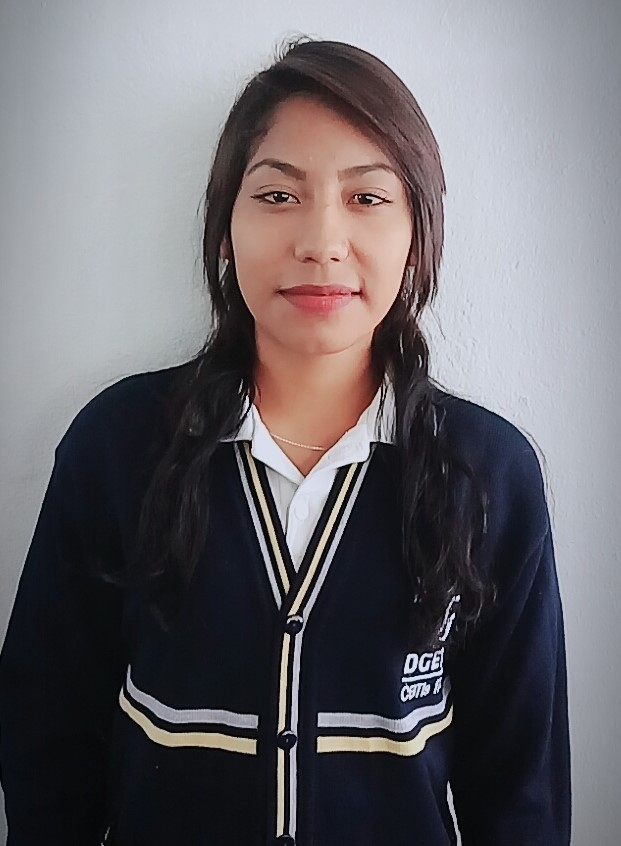
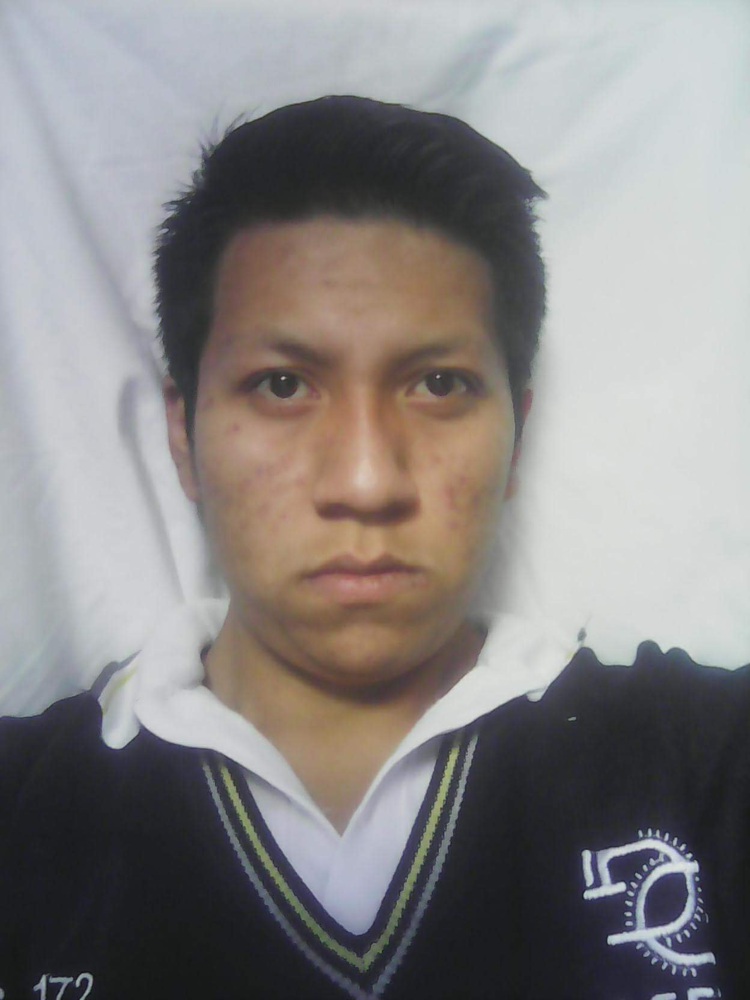
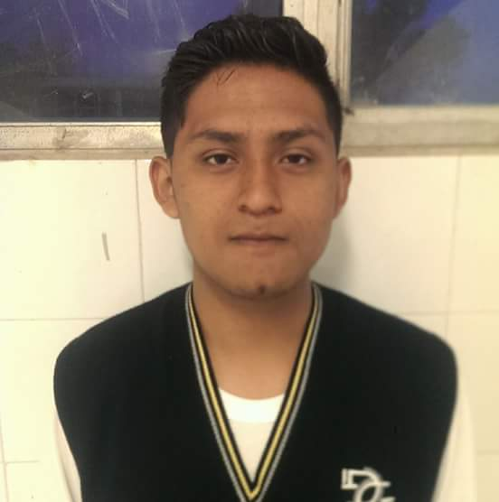

| Nombre |
Puesto |
Funciones |
Jazmín Cano Vázquez
|
Lider |
- Coordinar los trabajos para asegurar una covertuera maxima dentro de la organización.
- Supervisar la respuesta oportuna a las solicitudes.
- Asegurar que se lleven acabo las tareas de mantenimiento de rutina.
- Brindar asistencia en la coordinación de proyectos especiales.
- Asegurar que los técnicos registren apropiadamente los datos de cada una de las actividades.
| |
Karla Elizabeth Torrecillas Linares
 |
Analista |
- Es responsable de asegurar de que la información se recolecte y se utilice de forma efectiva.
- Debe de coordinar los esfuerzos para usar los datos de la mesa de ayuda con el proposito de apoyar
y modificar los servicios para determinar las necesidades de capacitación del equipo de mesa de ayuda.
|
Oscar de Jesús Hernandez Teniente
 |
Técnico |
- Proporcionar en promedio por menos 5 horas de servicio por semana en la mesa de ayuda.
- Responder a las solicitudes con lo mejor de sus habilidades.
- Realizar las rutinas de mantenimiento "programadas"de manera periodica.
- Trabajar y dar seguimiento para que cada una de las solicitudes se cierren con exito.
- Participar en todas las sesiones de capacitación que se requieran.
- Hacer un esfuerzo continuo para proporcionar un servicio de alta calidad al cliente.
| |
Jesús Balderas Almanza
 |
Técnico |
- Proporcionar en promedio por menos 5 horas de servicio por semana en la mesa de ayuda.
- Responder a las solicitudes con lo mejor de sus habilidades.
- Realizar las rutinas de mantenimiento "programadas"de manera periodica.
- Trabajar y dar seguimiento para que cada una de las solicitudes se cierren con exito.
- Participar en todas las sesiones de capacitación que se requieran.
- Hacer un esfuerzo continuo para proporcionar un servicio de alta calidad al cliente.
| |